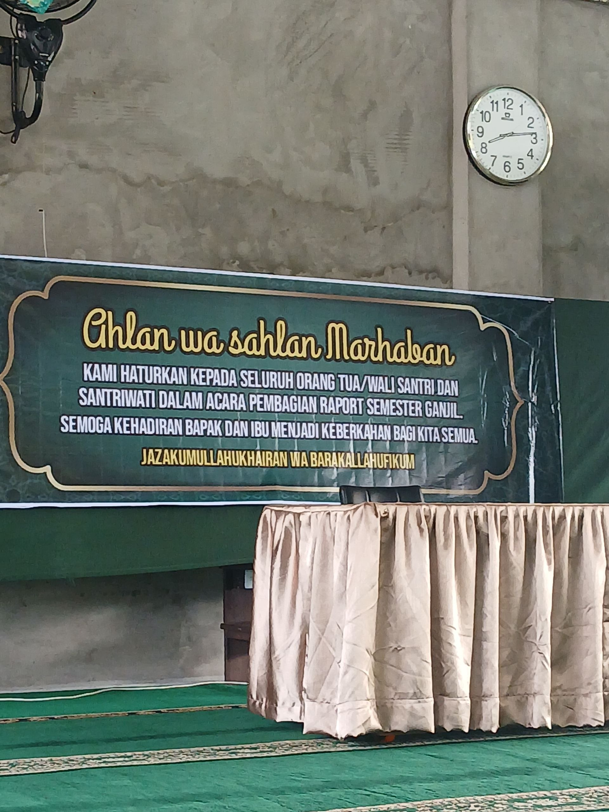
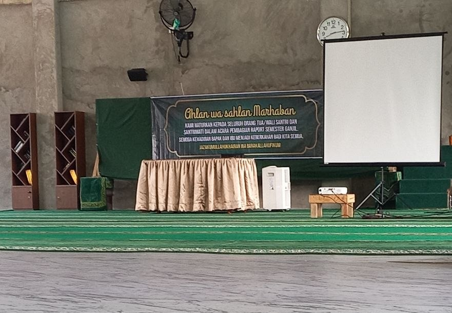

Tausiah dalam kegiatan pembagian raport hasil belajar semester ganjil tahun ajaran 2026/2027.
Alhamdulillah, pada Ahad, 13 September 2026 , telah dilaksanakan kegiatan pembagian raport hasil belajar semester ganjil tahun ajaran 2026/2027 . Kegiatan ini dihadiri oleh para wali santri, staf pendidik, dan tenaga kependidikan Ma'had Al Imam Adz Dzahabi Balikpapan . Kegiatan ini juga menjadi momentum untuk mempererat kebersamaan dan kerjasama antara Ma'had dan wali santri demi kemajuan pendidikan.
Pada kegiatan tersebut, Ustadz Abdul Fattah rahimahullah memberikan tausiah yang sangat berharga dalam memaknai hasil raport para santri. Beliau menyampaikan beberapa poin penting yang perlu menjadi perhatian bersama bagi para orang tua dalam mendidik putra-putri mereka.
Janganlah semata-mata kita melihat nilai atau angka yang tertera di dalam raport dan menganggapnya sebagai tolak ukur keberhasilan anak kita . Nilai akademik memang sesuatu yang penting, akan tetapi ada sesuatu yang lebih penting untuk dilihat dan diperhatikan oleh orang tua, yaitu bagaimana perkembangan keagamaan putra-putri kita; bagaimana aqidahnya, tauhidnya, ibadah mereka, adab, akhlak, serta muamalah mereka kepada orang tua, guru-guru, orang yang lebih dewasa, maupun kepada teman-temannya.
Allah subhanahu wa ta'ala berfirman yang artinya:
"Wahai orang-orang yang beriman, jagalah diri kalian dan keluarga kalian dari api neraka."
Tanggung jawab orang tua bukanlah semata agar anak mendapatkan nilai yang bagus, tetapi bagaimana upaya orang tua untuk menyelamatkan dirinya, keluarga, dan anak-anaknya dari neraka.
Bisa jadi nilai putra-putri kita tidak tinggi, tetapi ada perkembangan dalam ibadahnya, adab dan akhlaknya, serta kesungguhan dalam belajar. Ini adalah perkembangan yang luar biasa dan merupakan keberhasilan dalam suatu pendidikan, walaupun dari sisi nilai akademik kurang tinggi. Melihat perkembangan dari sisi agama adalah sesuatu yang menyejukkan dan membahagiakan hati orang tua.
Sebaliknya, bisa jadi ada anak yang nilai akademiknya bagus dan mendapatkan rangking, tetapi dilihat dari sisi ibadah, adab, dan akhlaknya masih kurang, baik kepada orang tua, guru, orang yang lebih tua, maupun kepada teman. Tentunya hal ini membutuhkan perhatian serius dari orang tua. Maka jangan berpatokan pada nilai raport yang tinggi apabila perkembangan agamanya kurang.
Raport merupakan bahan evaluasi tarbiyah putra-putri kita , bukan alat untuk menekan putra-putri kita ketika mendapatkan hasil atau nilai yang tidak sesuai dengan yang diharapkan.
Raport dapat menjadi alat untuk mengevaluasi penyerapan materi pelajaran dan mengetahui bagian mana dari pendidikan yang perlu diperbaiki. Dari raport, orang tua dapat melihat sejauh mana kesungguhan anak dalam belajar, sejauh mana kemampuan dalam memahami pelajaran, serta hal-hal yang masih kurang atau perlu diperbaiki dalam proses pendidikan.
Jika mendapatkan nilai yang tinggi, tanamkan dan ajarkan kepada putra-putri kita rasa syukur kepada Allah subhanahu wa ta'ala. Jangan menjadikannya sombong, merasa lebih hebat dari teman-temannya, atau merendahkan teman-temannya. Kemampuan dan kemudahan dalam belajar serta mendapatkan nilai yang bagus semata-mata merupakan nikmat dari Allah subhanahu wa ta'ala.
Bila anak mendapatkan nilai yang rendah, jangan digunakan untuk menekan anak-anak. Orang tua hendaknya lebih berfokus mencari penyebabnya, apakah karena kurang bersungguh-sungguh, lebih banyak bermain, kurang tidur sehingga mengantuk ketika pelajaran, kurang memahami pelajaran, atau terdapat kesulitan dan kendala lainnya.
Anak perlu difahami, didampingi, diarahkan, dan dibimbing , bukan semata-mata ditekan atau disuruh melakukan sesuatu tanpa adanya bimbingan dan pendampingan.
Jangan membanding-bandingkan anak-anak kita dengan anak yang lainnya. Hal ini karena kemampuan dan kelebihan setiap anak berbeda-beda. Terkadang satu anak memiliki kelebihan dalam memahami pelajaran, dalam hafalan, atau dalam sisi yang lainnya.
Sikap membandingkan terkadang dianggap sebagai upaya memberikan motivasi, tetapi justru dapat membuat anak merasa tidak dihargai oleh orang tuanya. Anak dapat merasa terus gagal di hadapan orang tuanya, terlebih ketika ia sebenarnya sudah berusaha dan bersungguh-sungguh.
Sampaikanlah kepada anak-anak bahwa abi dan umi tidak banyak menuntut terhadap mereka. Yang diharapkan adalah setidaknya mereka lebih baik dari sebelumnya . Tidak harus mendapatkan rangking, tetapi yang penting ada upaya dan kesungguhan untuk berubah menjadi lebih baik.
Adanya peningkatan berupa penambahan hafalan, tumbuhnya kesadaran untuk mengerjakan shalat, serta adanya kesadaran untuk belajar tanpa harus dikejar-kejar merupakan perkembangan yang luar biasa.
Tarbiyah putra-putri kita adalah investasi, simpanan, dan modal untuk mendapatkan keuntungan bagi kehidupan kita di akhirat . Sehingga apapun yang kita korbankan untuk tarbiyah ini adalah kebaikan yang kita harapkan hasilnya di akhirat.
Apa yang kita korbankan berupa waktu, tenaga, pikiran, demikian pula harta benda yang dikeluarkan untuk membiayai putra-putri kita, semuanya merupakan bagian dari usaha dalam pendidikan.
Anak yang kita didik dan titipkan ke Ma'had untuk diajarkan Al-Qur'anul Karim, pelajaran agama, serta bagaimana melaksanakan shalat dengan benar merupakan investasi kita untuk akhirat . Kita berharap anak menjadi anak yang shalih dan shalihah, beriman kepada Allah, bermanfaat bagi kaum muslimin, dan mendoakan orang tuanya.
Di akhirat, seseorang tidak akan mendapatkan kecuali apa yang telah ia usahakan. Anak yang shalih merupakan bagian dari usaha orang tua. Ketika seseorang meninggal maka terputuslah amalannya kecuali tiga hal: sedekah jariyah, ilmu yang bermanfaat, dan anak shalih yang mendoakannya.
Maka jangan berpikir bahwa biaya yang kita keluarkan sekadar pengeluaran atau menjadi beban. Hendaknya kita memahami bahwa biaya yang kita keluarkan untuk anak adalah investasi untuk kehidupan akhirat . Karena itu, tanyakan kepada diri kita: sudah sebanyak apa yang telah kita investasikan dalam tarbiyah atau pendidikan ini?
Hal ini bukan hanya berlaku bagi orang tua, tetapi juga bagi siapapun dari kalangan kaum muslimin yang mengeluarkan hartanya untuk membantu anak-anak kaum muslimin dalam belajar atau membantu thalibul ilmi dalam mempelajari agama Allah.
Syeikh Muhammad bin Shalih Al Utsaimin rahimahullahu ta'ala dalam Syarah Riyadush Shalihin mengambil faidah bahwa siapapun yang membantu saudaranya dalam ketaatan kepada Allah maka ia seperti orang yang melakukan ketaatan tersebut. Orang yang membantu thalibul ilmi akan mendapatkan pahala seperti orang yang menuntut ilmu tanpa mengurangi sedikitpun pahala dari penuntut ilmu tersebut.
Tarbiyah tidak akan bisa berjalan dengan baik jika diserahkan kepada pihak Ma'had saja. Dibutuhkan adanya kerjasama antara orang tua dengan pihak Ma'had .
Di Ma'had, para santri dibiasakan dengan jadwal belajar dan ibadah harian. Ketika libur, orang tua diharapkan membantu menjaga kebiasaan belajar dan ibadah harian tersebut meskipun dengan porsi yang lebih ringan. Misalnya bangun sebelum adzan Subuh, melakukan ibadah sunnah, dan murojaah Al-Qur'an.
Jangan sampai ketika libur anak diberikan kebebasan secara mutlak. Kita harus berusaha menjaga kebiasaan baik dan mengingatkan mereka. Demikian pula ketika di Ma'had terdapat teguran atas pelanggaran-pelanggaran, ketika libur orang tua juga harus mengingatkan hal-hal yang dilarang di Ma'had, di antaranya aturan penggunaan gadget.
Anak-anak kita sekarang hidup di zaman yang penuh tantangan dan fitnah. Mereka menghadapi tantangan dan fitnah melalui internet dan gadget. Orang tua harus selalu memperhatikan apa yang dilihat dan ditonton oleh anak-anaknya, siapa yang dijadikan panutan, serta dari mana mereka mengambil agama.
Hal ini bukan untuk selalu mencurigai mereka, tetapi sebagai amanah untuk menjaga mereka. Kita harus mengontrol interaksi mereka di internet, apa yang mereka lihat dan dengarkan, karena banyak hal melalui celah ini yang dapat menyebabkan anak-anak kehilangan semangat belajar. Karena itu, kerjasama antara orang tua dan Ma'had sangat dibutuhkan untuk meminimalisir dampak buruk yang menimpa mereka.

Kegiatan pembagian raport juga diselingi dengan presentasi dari tim Tata Usaha Ma'had dan sesi tanya jawab bersama wali santri.
Setelah itu dilakukan pembagian raport di ruang kelas bersama masing-masing wali kelas. Kegiatan juga dilanjutkan dengan pembagian hadiah bagi santri yang mendapatkan rangking serta koordinasi antara wali kelas dengan wali santri untuk peningkatan prestasi santri.
Keberhasilan pendidikan bukan hanya tentang nilai, tetapi tentang tumbuhnya iman, ibadah, adab, akhlak, kesungguhan, dan perubahan menjadi lebih baik.
Semoga kerjasama antara orang tua dan Ma'had senantiasa terjalin dengan baik dalam mendidik generasi yang berilmu, beriman, dan berakhlak mulia.
Alhamdulillah, kegiatan pembagian raport semester ganjil tahun ajaran 2026/2027 berjalan dengan lancar. Wali santri yang hadir juga antusias mengikuti rangkaian kegiatan hingga selesai.
Semoga Allah subhanahu wa ta'ala memberikan taufik dan kemudahan kepada para pendidik, orang tua, dan seluruh santri dalam menjalankan amanah tarbiyah. Semoga putra-putri kita menjadi generasi yang beriman, berilmu, beradab, berakhlak mulia, bermanfaat bagi kaum muslimin, dan menjadi investasi kebaikan bagi orang tuanya di akhirat.
Barakallahu fiikum.